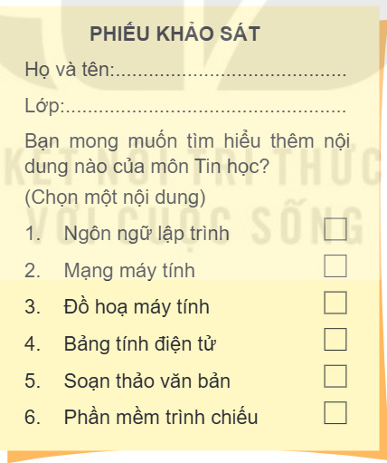
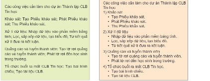
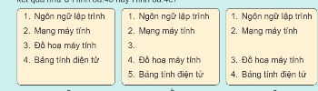
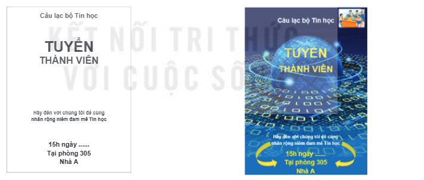
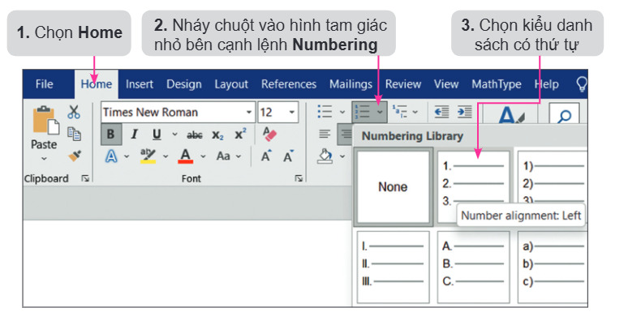
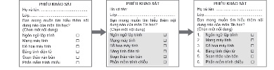
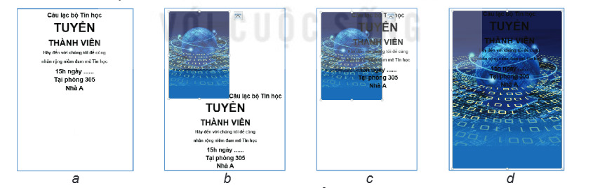
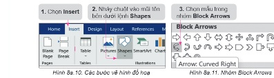

Dành cho giáo viên
Theo dõi lớp
| Học sinh / Nhóm | Đã nộp | Cập nhật |
|---|
Bước 1
1 Khởi động
Khởi động Phiếu khảo sát của An
Bạn An được giao nhiệm vụ thiết kế Phiếu khảo sát để sử dụng cho dự án Thành lập CLB Tin học theo mẫu như Hình 8a.1. Trong Phiếu khảo sát có một danh sách các nội dung của môn Tin học. Theo em, bạn An có cần nhập từng số thứ tự của danh sách này không? Với danh sách có hàng trăm mục thì làm thế nào để tiết kiệm thời gian nhập và không bị nhầm thứ tự các mục?

Ghi bài Khởi động
Sau khi thầy cô chốt, em chép nội dung dưới đây vào vở.
Bước 2 · Hình thành kiến thức mới
2.1 Danh sách dạng liệt kê
Hoạt động 1 Tác dụng của danh sách dạng liệt kê
Em hãy quan sát Hình 8a.2, Hình 8a.3 và cho nhận xét về hai cách trình bày nội dung.

Đọc hiểu Hai kiểu danh sách dạng liệt kê
Đọc mục 1 (SGK trang 37). Phần mềm soạn thảo văn bản cung cấp hai kiểu danh sách dạng liệt kê là: danh sách dấu đầu dòng và danh sách có thứ tự. Phiếu khảo sát ở Hình 8a.1 là một ví dụ về danh sách có thứ tự. Nội dung văn bản trong Hình 8a.3 là một ví dụ về danh sách có thứ tự kết hợp với danh sách dấu đầu dòng. Mỗi đơn vị trong danh sách dạng liệt kê là một đoạn văn bản, phân tách nhau bởi một kí tự đặc biệt, được tạo ra khi người sử dụng nhấn phím Enter. Trong danh sách dấu đầu dòng, mỗi đoạn văn bản bắt đầu bằng một dấu đầu dòng. Trong danh sách có thứ tự, mỗi đoạn văn bản bắt đầu bằng một số hoặc chữ cái và dấu phân tách (thường là dấu chấm hoặc dấu ngoặc đơn). Dấu đầu dòng và thứ tự được tự động tạo và cập nhật khi em thêm hoặc bớt các đoạn văn bản. Sử dụng danh sách dạng liệt kê giúp cho văn bản trở nên rõ ràng, có tính thẩm mĩ hơn, giúp người đọc có khả năng tham khảo thông tin nhanh chóng, dễ dàng. Hãy thử trong bảng mô phỏng dưới đây.
Câu hỏi SGK trang 37
Câu 2: với danh sách có thứ tự ở Hình 8a.4a, nếu em đặt con trỏ soạn thảo ở cuối dòng thứ hai rồi nhấn phím Enter để thêm một đoạn văn bản mới thì em sẽ thu được kết quả như ở Hình 8a.4b hay Hình 8a.4c? Kiểm tra ngay trên bảng mô phỏng ở trên: nháy chuột vào cuối dòng thứ hai (Mạng máy tính) rồi nhấn phím Enter (hoặc nút ↵ Enter).

Ghi bài 1. Danh sách dạng liệt kê
Sau khi thầy cô chốt, em chép nội dung dưới đây vào vở.
Bước 2 · Hình thành kiến thức mới
2.2 Làm việc với hình ảnh minh hoạ và vẽ hình đồ hoạ
Hoạt động 2 Hiệu quả của hình ảnh minh hoạ
Em hãy quan sát các Hình 8a.5, Hình 8a.6 và trả lời các câu hỏi.

Đọc mục 2 (SGK trang 38). Bên cạnh các công cụ xử lí văn bản, phần mềm soạn thảo còn cung cấp các công cụ xử lí hình ảnh, giúp em nâng cao hiệu quả sử dụng hình ảnh. Em có thể: chèn thêm, xoá bỏ hình ảnh; thay đổi kích thước, vị trí hình ảnh;… Bên cạnh đó, phần mềm soạn thảo văn bản còn cung cấp một thư viện đa dạng các mẫu hình đồ hoạ, các chức năng để vẽ hình đồ hoạ trong văn bản. Với các công cụ mà phần mềm soạn thảo văn bản cung cấp, em có thể tạo được các sản phẩm là văn bản có tính thẩm mĩ phục vụ nhu cầu thực tế.
Câu hỏi SGK trang 39
Ghi bài 2. Hình ảnh và hình đồ hoạ
Sau khi thầy cô chốt, em chép nội dung dưới đây vào vở.
Bước 2 · Thực hành
2.3 Thực hành: Tạo sản phẩm là văn bản phục vụ nhu cầu thực tế
Nhiệm vụ 1 Tạo Phiếu khảo sát
Dùng phần mềm soạn thảo (SGK minh hoạ bằng Microsoft Word 2016):
- a) Khởi động phần mềm, nhập nội dung phiếu khảo sát. Kí hiệu ☐ nhập bằng Insert → Symbol.
- b) Tạo danh sách có thứ tự: chọn các đoạn văn bản → thẻ Home → nháy tam giác nhỏ cạnh lệnh Numbering → chọn kiểu danh sách.
- c) Lưu tệp: File → Save, tên PhieuKhaoSat.docx.


Làm thử bước b) trên mô phỏng: bấm các ô vuông đầu dòng để chọn 6 dòng nội dung (giữ Shift để chọn liền một đoạn), bấm ▾ cạnh Numbering rồi chọn kiểu 1. 2. 3.
Nhiệm vụ 2 Tạo tờ rơi tuyển thành viên CLB Tin học
Tờ rơi mẫu gồm: ảnh nền, văn bản, hình đồ hoạ; văn bản và hình đồ hoạ nằm ở lớp trên, ảnh nền ở lớp dưới.
- a) Nhập nội dung tờ rơi (như tờ rơi chỉ có chữ).
- b) Chèn ảnh nền: Insert → Picture. Để ảnh nằm dưới chữ: chọn ảnh → Format → Arrange → Wrap Text → Behind Text. Kéo hình vuông nhỏ ở góc dưới bên phải ảnh để ảnh phủ kín tờ rơi.
- c) Vẽ hình mũi tên: Insert → Shapes → Block Arrows, kéo thả chuột để vẽ; đổi màu: Format → Shape Fill → vàng. Muốn xoá: chọn đối tượng rồi nhấn Delete.
- d) Chỉnh vị trí dòng chữ “TUYỂN THÀNH VIÊN”, đổi màu chữ sang vàng; chèn ảnh nhỏ ở góc trên bên phải, đặt Wrap Text → Square.
- e) Lưu tệp với tên TuyenThanhVien.docx.

Làm thử các bước b), c), d) trên mô phỏng trước khi làm trên máy tính: chèn ảnh nền, đổi Wrap Text, kéo kích thước, vẽ hai hình mũi tên (kéo thả để đặt vị trí), tô màu vàng, đổi màu chữ và chèn ảnh nhỏ.

Ghi bài 3. Thực hành
Sau khi thầy cô chốt, em chép nội dung dưới đây vào vở.
Bước 3
3 Luyện tập
Luyện tập Văn bản dự án CLB Tin học
Em hãy sử dụng phần mềm soạn thảo văn bản để nhập dữ liệu cho dự án Thành lập CLB Tin học, tạo danh sách dạng liệt kê cho dữ liệu theo mẫu ở Hình 8a.3 và lưu lại tệp với tên CLBTinhoc.docx.
Luyện trước trên mô phỏng: nội dung Hình 8a.2 đã được tách thành từng đoạn. Hãy tạo danh sách có thứ tự cho 4 tên công việc lớn và danh sách dấu đầu dòng cấp 2 (Tăng mức / phím Tab) cho các việc nhỏ, giống Hình 8a.3.
Luyện trước trên mô phỏng: nội dung Hình 8a.2 đã được tách thành từng đoạn. Hãy tạo danh sách có thứ tự cho 4 tên công việc lớn và danh sách dấu đầu dòng cấp 2 (Tăng mức / phím Tab) cho các việc nhỏ, giống Hình 8a.3.
Ghi bài Luyện tập
Sau khi thầy cô chốt, em chép nội dung dưới đây vào vở.
Bước 4
4 Vận dụng
Vận dụng Mẫu danh sách mới và tờ rơi CLB
Trong Word, mẫu mới được tạo bằng Bullets ▾ → Define New Bullet… (chọn Symbol, Picture hoặc Font) và Numbering ▾ → Define New Number Format… (chọn kiểu số và gõ thêm chữ trước/sau số). Thử trên mô phỏng: nhập một kí hiệu riêng cho dấu đầu dòng và một mẫu thứ tự như “Bước 1:”, “Phần A –”.
Ghi bài Vận dụng
Sau khi thầy cô chốt, em chép nội dung dưới đây vào vở.